Graph2d
Axis Titles and Styling
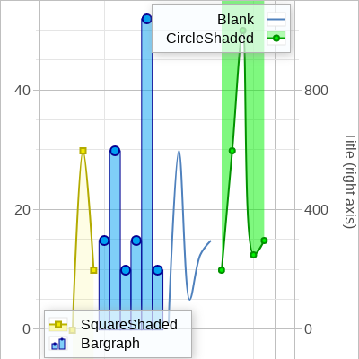
Bar Graph Example
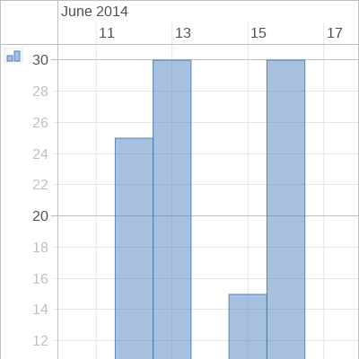
Bar Graph Example!
Bar Graph Example!!
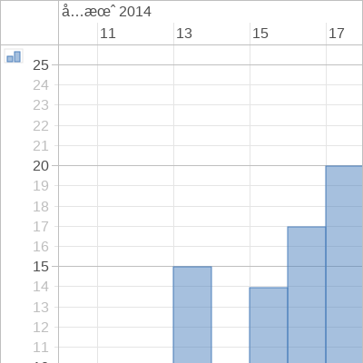
Bar Graphs Side by Side Example
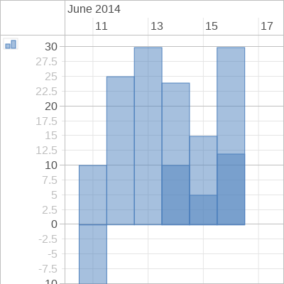
Bar Graphs Side by Side Example with Groups
Basic Example
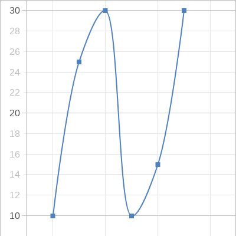
Basic Example!
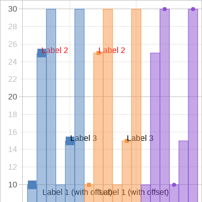
Both Axis Example
Dynamic Styling
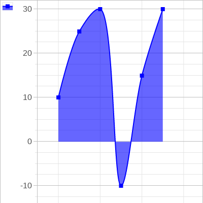
External legend Example
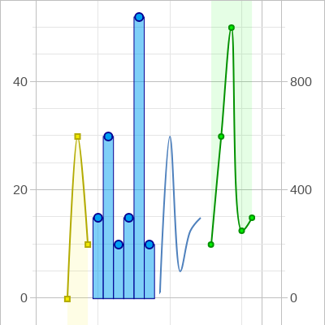
Groups Example
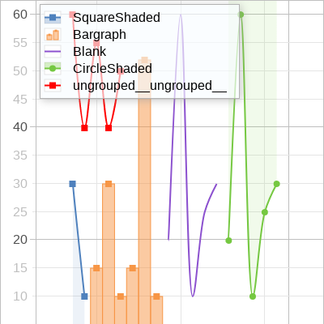
Interpolation
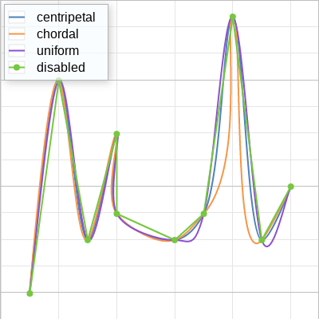
Localization
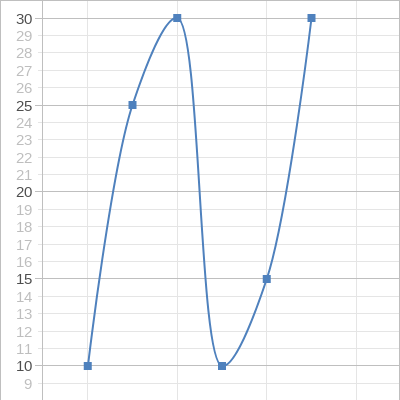
Performance
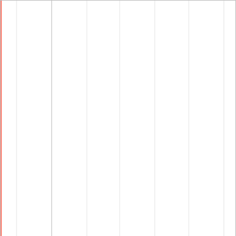
Right Axis Example
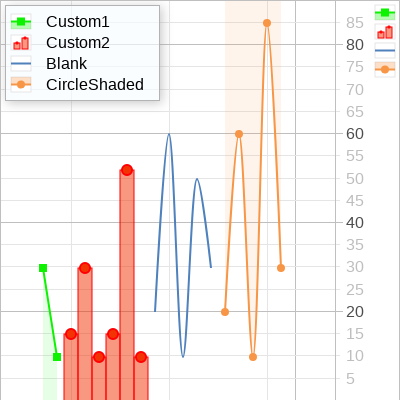
Scatterplot
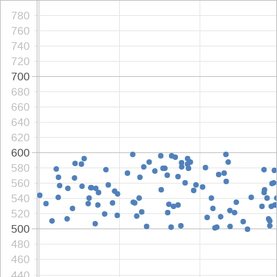
Scrolling and Sorting
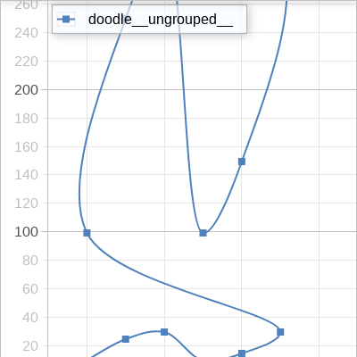
Shading Example
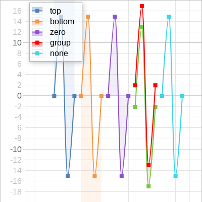
Streaming data
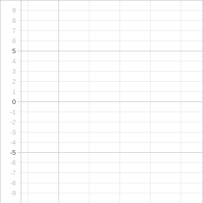
Toggle Groups Example
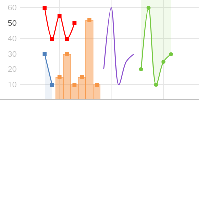